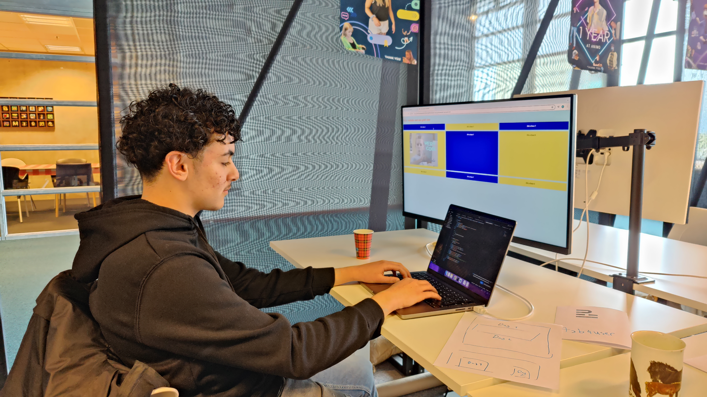

Animo Solutions is een bedrijf wat een software ontwikkeld om een soort digitale pasjeshouder bij te houden voor je. Ze ontwikkelen de technologie die er nodig is om alle gevoelige documenten (Id, Paspoort, Rijbewijs, Studiepas) makkelijk bij je te houden. Nu moet je vaak via een foto verifieren dat je het echt bent. Online is deze informatie heel makkelijk te vervalsen. Via Animo gaat het vervalsen van deze documenten heel lastig en hoeft de overheid geen fisieke documenten meer uit te geven.
Ik vond het vroeger altijd heel interessant om spelletjes te programmeren. Ik vroeg me af of ik dit leuk zou vinden om dit te gaan studeren. Toen ben ik via mijn vader terecht gekomen bij Animo. Ik was ook nieuwsgierig naar het kantoorleven. Ik wil later eventueel ook ooit mijn eigen kantoor. Hierom ben ik bij Animo stage gaan lopen.
We begonnen dag 1 om 10 uur met een korte rondleiding van ongeveer een half uur. Ik heb mezelf toen ook even aan het team voorgesteld en ben toen aan de slag gegaan. Ik heb les 1 gevolgd van "kennismaken met Python". Python is een programeertaal die word gebruikt om bijna alle platformen te maken. In les 1 heb ik de basis geleerd. Dit duurde ongeveer tot 12 uur.
Ook dag 2 begonnen we om 10:00 op kantoor. Ik kon gelijk aan de slag en op dag 2 gingen we een website bouwen. Dat is de website die je nu ziet. Ik heb leren kennismaken met HTMl en CSS. Dat zijn tegenwoordig bekende tools om websites mee te bouwen. Dit heb ik tot 13:00 gedaan.
Om 13:00 zijn we gaan lunchen dat duurde ongeveer tot 13:30 daarna heb ik Ana (stagebegeleider) geintervieuwd. Dat duurde ongeveer tot 14:00. Hierna heb ik de website afgemaakt en heb ik mijn stagelogboek afgemaakt. Hierna hebben we de website online gezet en nu kan je de website bekijken!

Ik heb het erg leuk gehad en heb veel nieuwe dingen geleerd. Ik ben erg trots op mezelf dat ik deze website heb gebouwd. Ook vind ik het leuk om gezien te hebben hoe het nou is op een kantoor. Ik heb wel altijd in series en films gezien hoe een kantoor is maar ik vind het ook leuk om eens in het echt mee te maken hoe het kantoorleven nou echt is. In een team werken vond ik erg leuk.
Ik weet nu hoe ik een website kan bouwen. Ook weet ik de basis over python en kan ik dit nu gebruiken. Ik weet nu hoe het is om in een kantoor met een team te werken. Dit vind ik erg leuk, het lijkt mij ook leuk om uiteindelijk een team te leiden.
Ik merkte dat ik in het begin het nog eng vond om hulp te vragen. Toen bedacht ik me dat er helemaal geen reden was om bang te zijn en toen begon ik met hulp vragen zodra dit nodig was.
Ik denk dat je met programmeren heel erg leert om nooit te snel te gaan anders maak je fouten.
Fouten maken is niet erg want je kan ze in code nog altijd rechtzetten. Je moet alleen goed kijken naar de code en de fout zien te vinden.